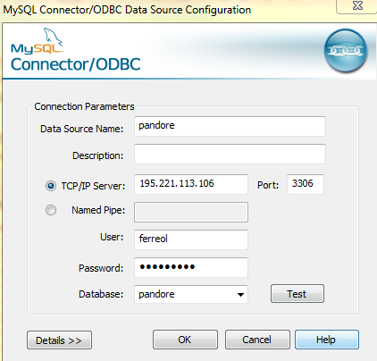

Penser à installer le pilote ODBC. Attention pandore est en 32 bits, il faut donc R en 32 bits également.
Puis le configurer :

Puis, le package RODBC peut être utilisé dans R :
library(RODBC)
#Connexion à la base
pandore=odbcConnect("pandore",uid="******",pwd="********")
# Exemple de requête
typo=sqlQuery(pandore,"SELECT cd_site, classe_taille, riviere, commune FROM site")Le package RMySQL (existe aussi pour RPostGreSQL, etc.) s’appuie sur le package DBI
library(RMySQL)
pandore <- dbConnect(dbDriver("MySQL"), dbname="pandore",
host="195.221.113.106", port=3306,
user="********", password="*******")
typo<-dbGetQuery(pandore,"SELECT cd_site, classe_taille, riviere, commune FROM site",n=-1)Feather est un projet visant à créer un format de fichier qui serait la signature de Rstudio. Les benchmark réalisés ont démontré que sa vitesse d’écriture et de lecture sont bien plus rapides que du .csv
library(feather)
data(mtcars)
write_feather(mtcars,"mtcars.feather") # Produit un fichier signature de R : .feather
read_feather("mtcars.feather")## # A tibble: 32 x 11
## mpg cyl disp hp drat wt qsec vs am gear carb
## <dbl> <dbl> <dbl> <dbl> <dbl> <dbl> <dbl> <dbl> <dbl> <dbl> <dbl>
## 1 21.0 6.00 160 110 3.90 2.62 16.5 0 1.00 4.00 4.00
## 2 21.0 6.00 160 110 3.90 2.88 17.0 0 1.00 4.00 4.00
## 3 22.8 4.00 108 93.0 3.85 2.32 18.6 1.00 1.00 4.00 1.00
## 4 21.4 6.00 258 110 3.08 3.22 19.4 1.00 0 3.00 1.00
## 5 18.7 8.00 360 175 3.15 3.44 17.0 0 0 3.00 2.00
## 6 18.1 6.00 225 105 2.76 3.46 20.2 1.00 0 3.00 1.00
## 7 14.3 8.00 360 245 3.21 3.57 15.8 0 0 3.00 4.00
## 8 24.4 4.00 147 62.0 3.69 3.19 20.0 1.00 0 4.00 2.00
## 9 22.8 4.00 141 95.0 3.92 3.15 22.9 1.00 0 4.00 2.00
## 10 19.2 6.00 168 123 3.92 3.44 18.3 1.00 0 4.00 4.00
## # ... with 22 more rows